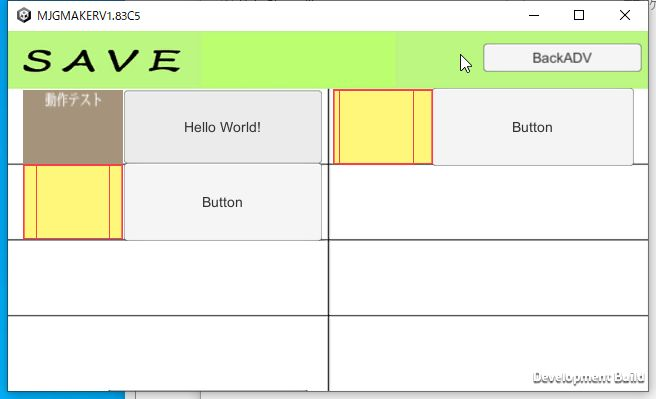
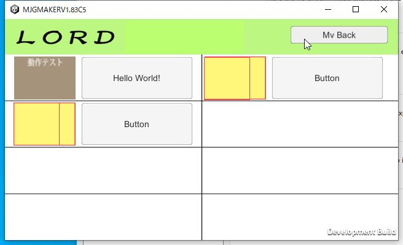
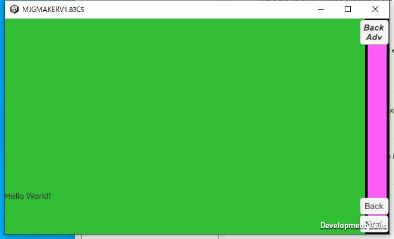
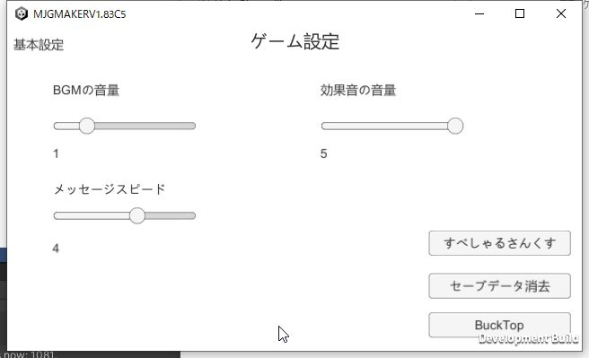
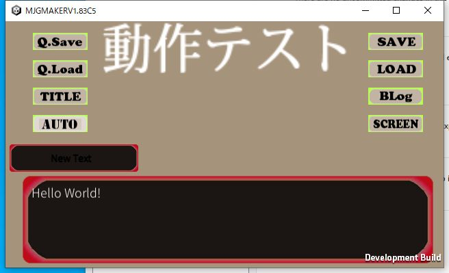

|
今までの物にもついてはいたのですが、改めてセーブやロードをやってみたいと思います。 まずはセーブ。基本的には設定もしなくても3つほど入っているので、好きな所にセーブしてください クイックセーブというのもあって、こちらはセーブ番号は自動的に9になっているセーブです。 |  |
|
次はロード、こちらも特に説明はいらないと思います。 クイックロードはクイックセーブした物をロードするだけです |  |
|
バックログです。今まで見た文章を見返せます。 |  |
|
後はコンフィグ画面。セーブしたデータの消去や、音量の調整などをこちらで行えます。 |  |
| その他、オートは自動で文章を読んで進めます。フルボイスの際はボイスが終わるか一定時間経過で次の部分に進みます。 ボイスモードでない場合は文章の最後まで進めたら次の文に進みます。 タイトルはタイトル画面に戻ります。SCREENはスクリーンのボタンをすべて一時的に消去して全体が見やすくなるようにします。 |  |